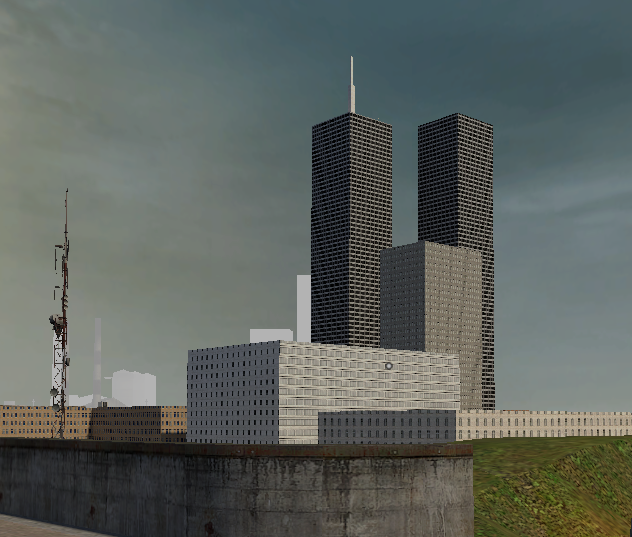
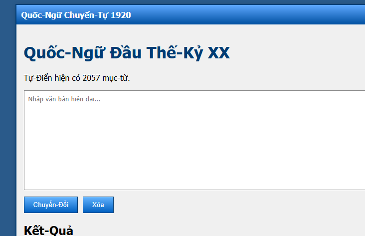

My projects
This is a compilation of all my project on all sorts of platforms.
1. Nokia Game
About the project:
A collection of lightweight browser games designed for old phones and low-bandwidth devices. 📟 Built to work on modern browsers and internet-capable feature phones such as the Nokia 110 4G. Simple, fast, and playable anywhere! 🎮
Browsers tested on:
- Modern Broswers in general: ✅
- Google Chrome 30 to Modern Chromes: ✅
- Internet Explorer 11: ✅
- Opera Mini 4 (for nokia): ✅
2. Red Star Search! (Modern version)
About the project:
A retro-themed search engine frontend built using Google CSE, designed to: Work on ANY browser (NEED TO SUPPORT HTTPS DUE GITHUB)📟 Feel like a 2000s + Soviet-style internet portal + Real Glossy 🚩 Be simple, fast, and low-bandwidth friendly!
Broswers that tested on:
- Modern Broswers in general: ✅
- Google Chrome 51 to Modern Chromes: ✅
- Internet Explorer 11: ❌(only GUI working)
- Opera Mini 4 (for nokia): ❌(only GUI working)
For Low Bandwidth/Old broswers, look under
3. Red Star Search! - Low-Bandwidth Edition
About the project:
A highly simplified low-bandwidth edition of Red Star Search,
designed for ancient browsers, older hardware, and exceptionally
heroic internet connections.
📟
Features:
• Works on legacy browsers that struggle with modern websites.
• Designed with minimal JavaScript and lightweight pages.
• Optimized for older computers and mobile devices.
• Preserves the classic Red Star Search experience while using
significantly fewer resources.
🚩
Browsers tested on:
- Google Chrome 31 - 50: ✅
- Internet Explorer 11: ✅
- Opera Mini 4 (Nokia): ✅
- Older Android Browsers: ✅
- Modern Browsers: ❌ (Access Restricted)
Notice:
This edition is intended for legacy browsers and low-bandwidth environments. Modern browsers may be redirected or denied access in order to preserve server resources and API quotas for citizens requiring legacy access.
4. Sovietgrad

About the project:
Welcome to SOVIETGRAD, an immersive Garry's Mod sandbox experience that transports players into the heart of a decaying, post-Soviet industrial city. Set in the year 2005, this map is designed from the ground up to offer pure creative freedom and atmospheric city gameplay, serving as the perfect canvas for your next prop-building session, roleplay scenario, or cinematic machinima project.
The centerpiece of the urban area is the imposing House of People’s Committees, a brutalist administrative monolith that still dominates the skyline. Right outside its heavy concrete walls sits a rusted public information board containing a timeline of the city's bureaucratic history. Players can step up to inspect contrasting historical documents—ranging from an old, official municipal decree dated December 22, 1991, to a cheerful local "modernization and public broadcasting" announcement from March 14, 2005. These papers give the streets a realistic, lived-in historical backdrop.
Beyond the administrative district, SOVIETGRAD features a sprawling outdoor sandbox arena for players to explore and build in. The city's landscape is fractured by massive structural failures and caved-in anomalies, creating interesting terrain, cratered paths, and open spaces. An old, abandoned subway tunnel and a curved rail system cut through the area, providing great physical connectivity across the urban ruins and giving builders plenty of unique spots to set up their contraptions.
Engineered to maximize visual fidelity while strictly adhering to the technical limits of the Source Engine, every corner of the environment is highly optimized for smooth performance. Whether you are using the Physics Gun to clean out collapsed corridors, setting up complex wire contraptions in the desolate concrete halls, or staging tactical sandbox combat operations throughout the city, SOVIETGRAD offers a beautifully atmospheric, nostalgic playground.
SOVIETGRAD — Step into the quiet. Build among the ruins. Explore the city.
Games need:
- Garry's Mod 13
- CS:S (for textures)
Quốc-Ngữ Chuyển-Tự 1920

Giới thiệu dự án:
Quốc-Ngữ Chuyển-Tự 1920 là một công cụ chuyển đổi văn bản tiếng Việt hiện đại sang phong cách chữ viết Quốc-Ngữ mang cảm hứng đầu thế kỷ XX. Dự án mô phỏng cách viết cổ điển với dấu gạch nối, thuật ngữ hành chính hóa, và cách diễn đạt mang màu sắc lịch sử giả tưởng.
Công cụ hỗ trợ chuyển đổi từ ngôn ngữ hiện đại sang hệ thống từ vựng cách điệu, bao gồm các khái niệm về công nghệ, internet, trí tuệ nhân tạo, và đời sống hiện đại được “cổ điển hóa” theo phong cách tài liệu hành chính xưa.
Hệ thống hiện tại chứa hơn 2000 mục từ tùy chỉnh, hoạt động hoàn toàn trên trình duyệt bằng JavaScript thuần, không cần máy chủ và có thể sử dụng ngoại tuyến sau khi tải.
Công cụ được thiết kế nhẹ, tối ưu cho cả máy tính và thiết bị di động, nhằm mô phỏng một “phiên bản ngôn ngữ lịch sử giả lập” của tiếng Việt hiện đại.
Quốc-Ngữ Chuyển-Tự 1920 — Biến hiện đại thành lịch sử.
Tính năng:
- Hơn 2000 mục từ điển chuyển đổi
- Phong cách Quốc-Ngữ giả lập đầu thế kỷ XX
- Hỗ trợ công nghệ, internet, AI, và thuật ngữ hiện đại
- Chạy hoàn toàn bằng HTML + JavaScript
- Hoạt động offline sau khi tải trang
About the project:
Quốc-Ngữ Chuyển-Tự 1920 is a Vietnamese text conversion tool that transforms modern Vietnamese into a stylized early 20th-century Quốc-Ngữ-inspired writing system. The project simulates historical orthography using hyphenated words, bureaucratic terminology, and fictional historical linguistic styling.
The tool converts modern expressions into a stylized vocabulary system that includes technology, internet concepts, artificial intelligence, and modern daily life reinterpreted in a historical administrative writing style.
The system currently contains over 2000 custom dictionary entries, running entirely in the browser using pure JavaScript, requiring no backend server, and can work offline once loaded.
It is designed to be lightweight and mobile-friendly, simulating a fictional historical linguistic layer over modern Vietnamese language.
Quốc-Ngữ Chuyển-Tự 1920 — Turning modern language into history.